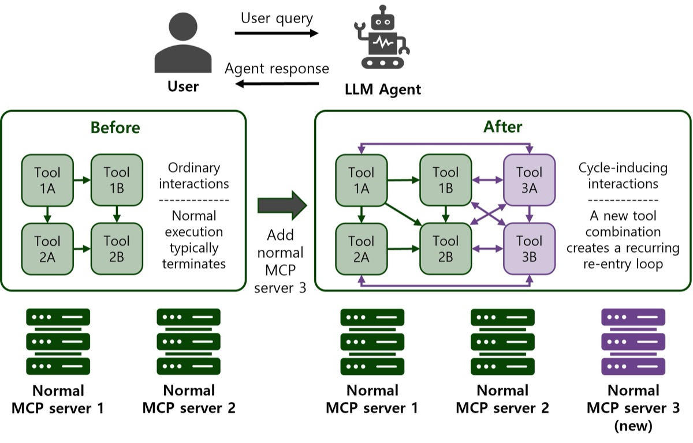
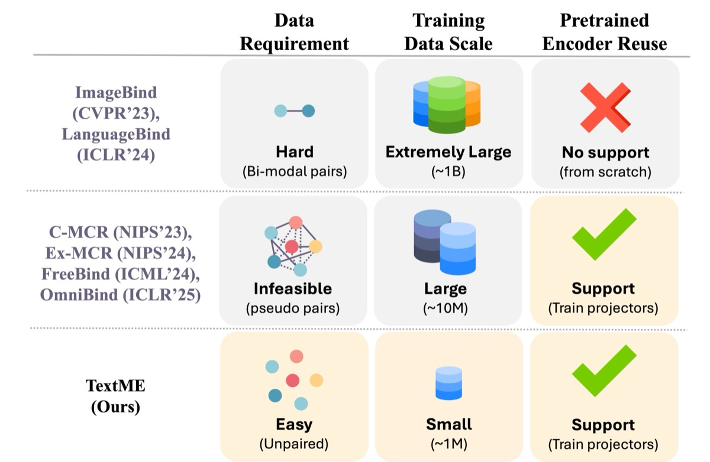
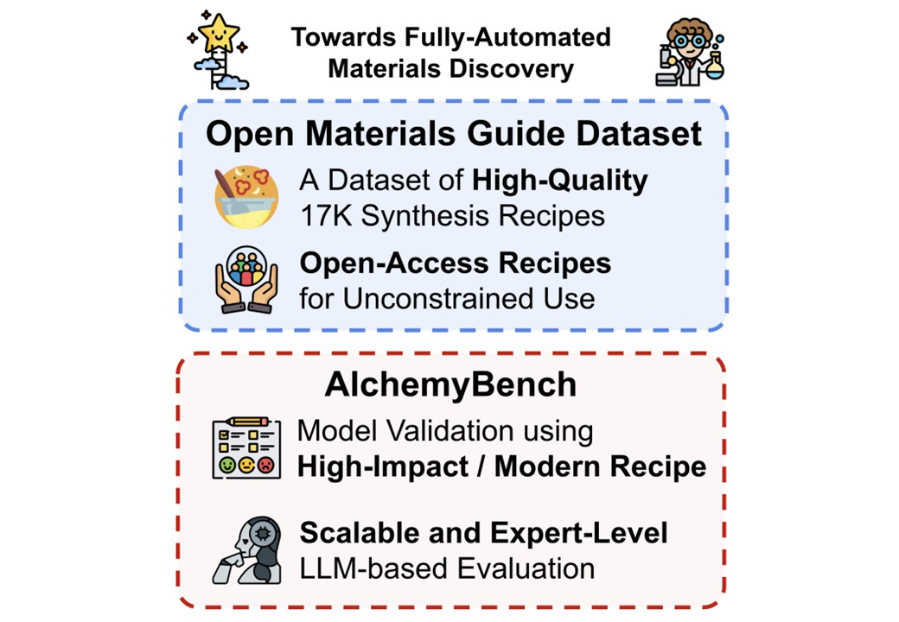

System-based outcome evaluation and causality-based behavior assessment for model robustness and explainability
Knowledge-enhanced generation techniques and foundation model development
Multimodal large language models and their applications

Overthinking Loops in Agents: A Structural Risk via MCP Tools
arXiv 2026

TextME: Bridging Unseen Modalities Through Text Descriptions
ICML 2026

Towards Fully-Automated Materials Discovery via Large-Scale Synthesis Dataset and Expert-Level LLM-as-a-Judge
CIKM 2025
Multi-faceted and Efficient Diagnosis of Large Language Model Capabilities (거대언어모델 능력의 다면적·효율적 진단 방법 연구)
TextME: Bridging Unseen Modalities Through Text Descriptions
Overthinking Loops in Agents: A Structural Risk via MCP Tools
Welcome to the new Data Intelligence Lab homepage.
Towards Fully-Automated Materials Discovery via Large-Scale Synthesis Dataset and Expert-Level LLM-as-a-Judge
Rethinking the Training Paradigm of Discrete Token-Based Multimodal LLMs: An Analysis of Text-Centric Bias
Overcoming Source Object Grounding for Semantic Image Editing